Each of the three main entrances to the cathedral - west, north, and south - contains three doors, and each door (or portal) is surrounded by sculpture, as shown in the following diagram. Each of the portal assemblies is thematically related, and contributes to the overall thematic program of the cathedral's art.
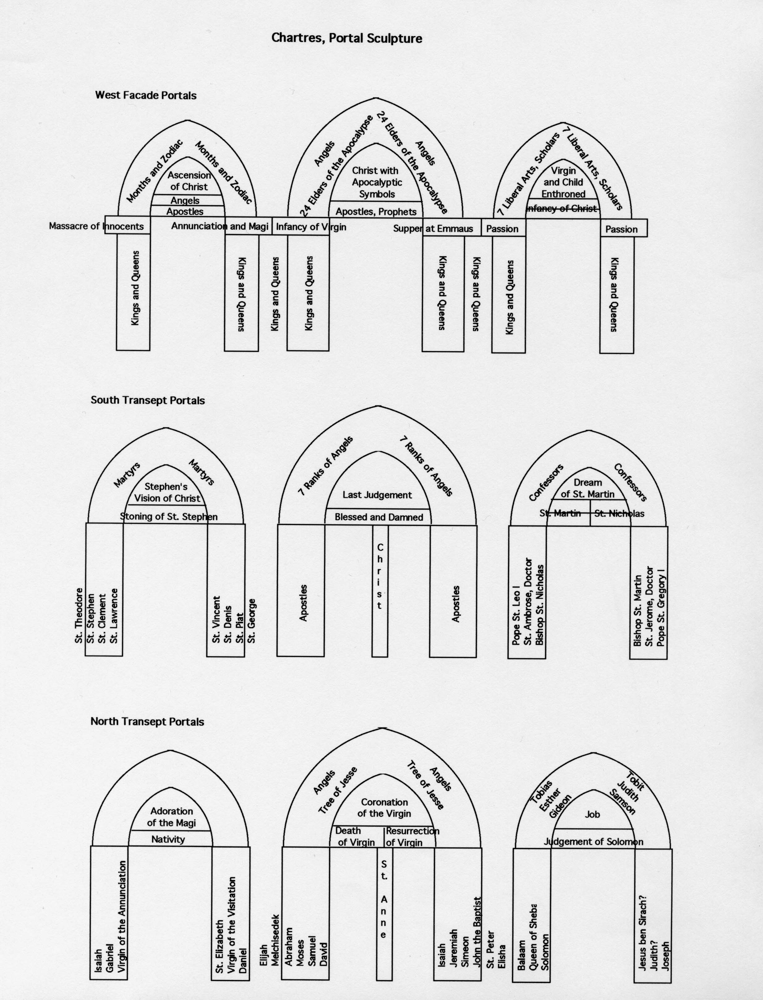
The West Facade
The west facade portals are the oldest, dating to the 1140's; they were the only part of the earlier cathedral to have survived the fire. Flanking the doors are a series of figures who cannot be specifically identified; they represent kings and queens, or perhaps saints. Above the doors, the central portal represents the Apocalypse, the left portal the ascension of Christ, and the right portal the Virgin. The story of the life of Christ is told above the heads of the kings and queens across the whole assemblage.
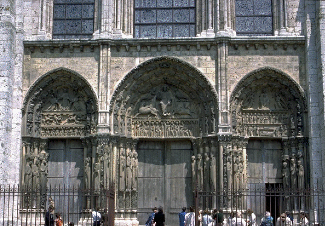
(general view of the western entrance porches)
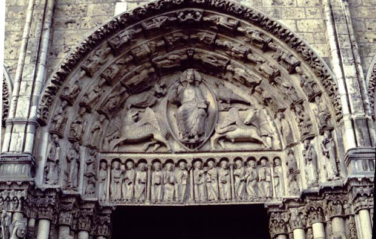
(detail, central portal with Christ of the Apocalypse)
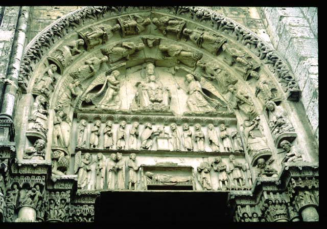
(detail, right portal, Virgin and Child enthroned, with scenes from the infancy of Christ - annunciation, visitation, nativity, presentation at the temple - in the two rows below, and the seven liberal arts in the surrounding arches)
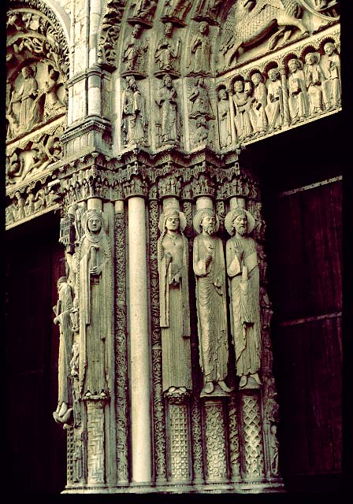
(detail of the central portal, showing the kings and queens flanking the doorways)
The north transept is dedicated to the Virgin and to the Old Testament. Scenes from the life of the Virgin, and from Old Testament stories are found in the tympana, or semicircles above the doors. Flanking the doors are figures from the Old Testament, and from the life of the Virgin. St. Anne, the mother of the Virgin, is found on the center jamb. This iconography corresponds to the stained glass above these doors, which also glorify the Virgin.
As a parallel, the south transept is dedicated to Christ and to the
New Testament and Christian saints, and likewise corresponds to the stained glass imagery above them.
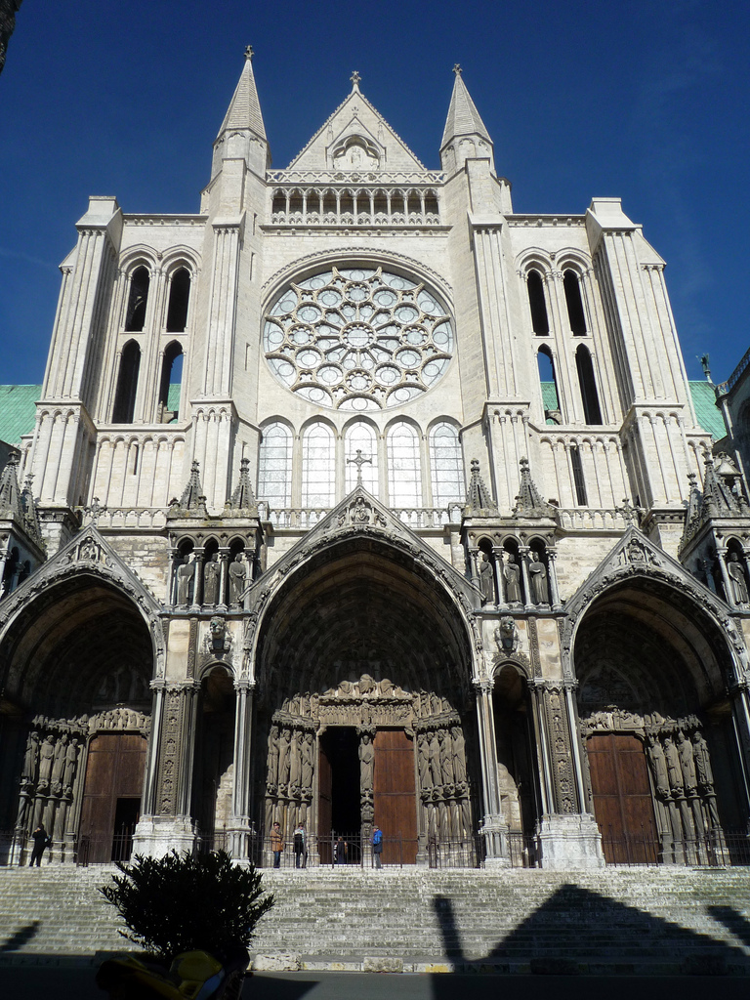 |
Here is a view of the entire south transept porch with its three portals. (It is so wide, and there are buildings just behind where the photographer is standing, it is very hard to take a good picture!) |
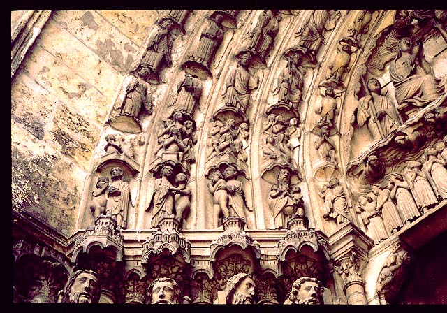 |
In the center portal of the south transept is a depiction of the Last Judgement. Here you see, on the left of the main scene, the souls of the saved being carried to heaven by angels. |
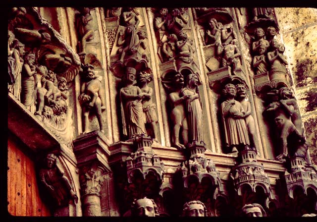 |
Here, to the right of the main scene, are the souls of the damned being carried off to hell by devils. |
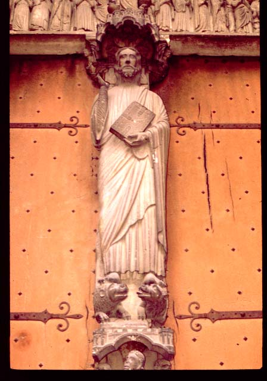 |
Between the doors in this portal stands Christ, trampling on the lion and the basilisk. |
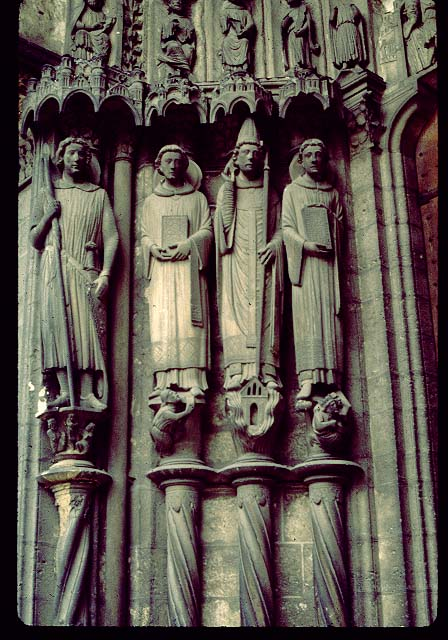 |
Flanking the portals are two different types of
saints:
martyrs in the left portal, and confessors - those who did not die for
the faith - in the right portal. Here are some of the martyrs,
from
the left, Sts. Theodore, Stephen, Pope Clement, and Lawrence.
Note that St, Theodore, on the left, is dressed as a courtly knight. |
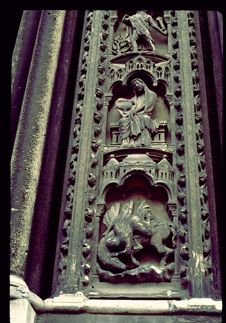 |
Finally, on the external part of the porch are depicted more scenes, such as the seven deadly sins and the seven cardinal virtues. Here are two of these: humility (the seated woman), and pride (falling off a horse, because pride goes before a fall). |